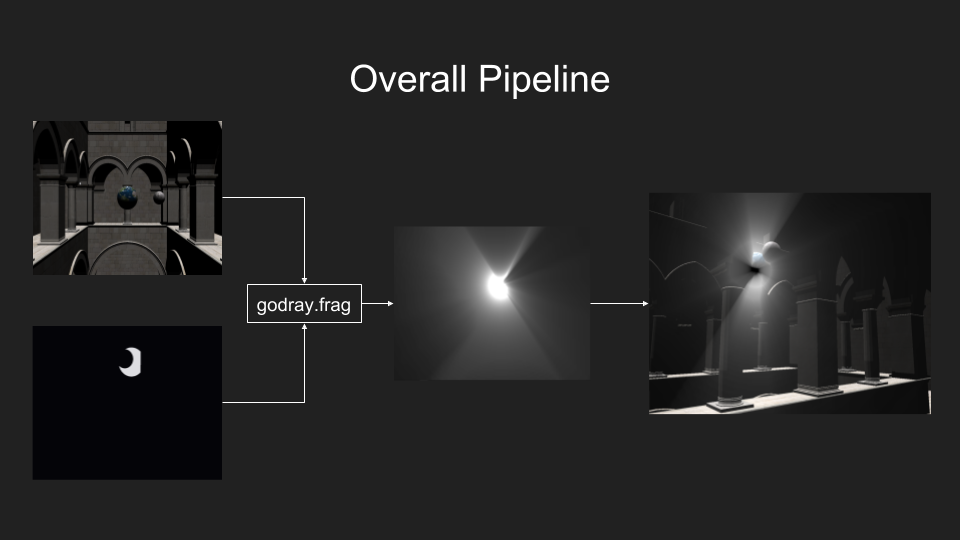
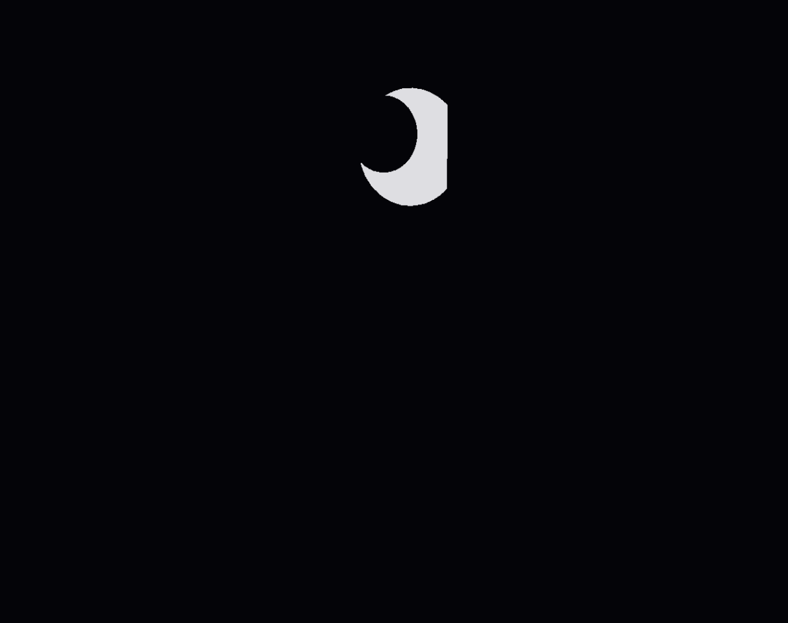
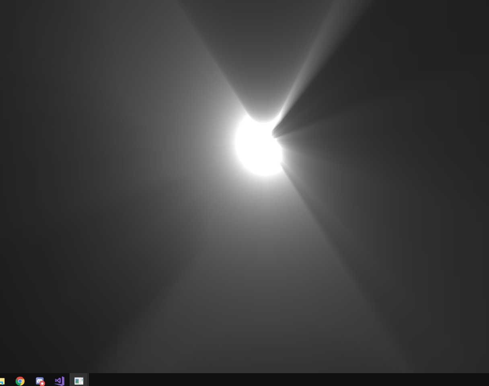
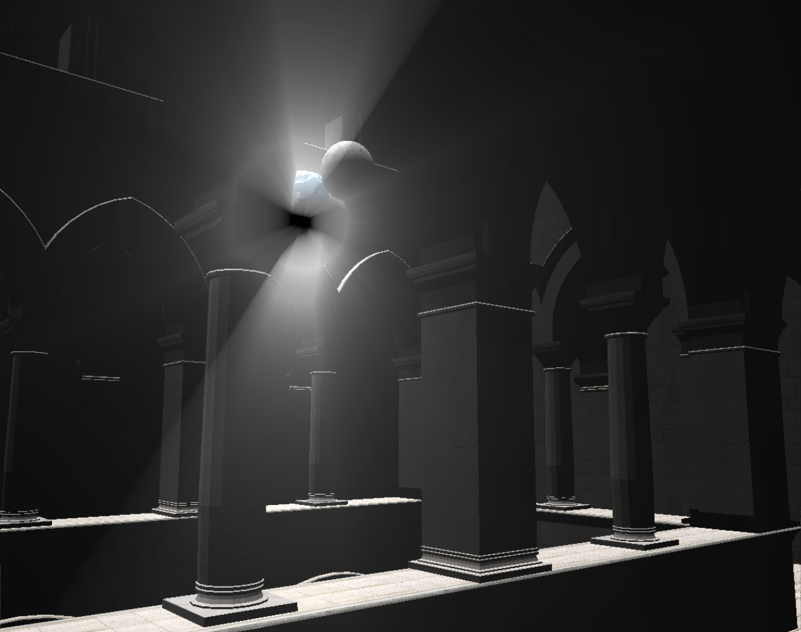
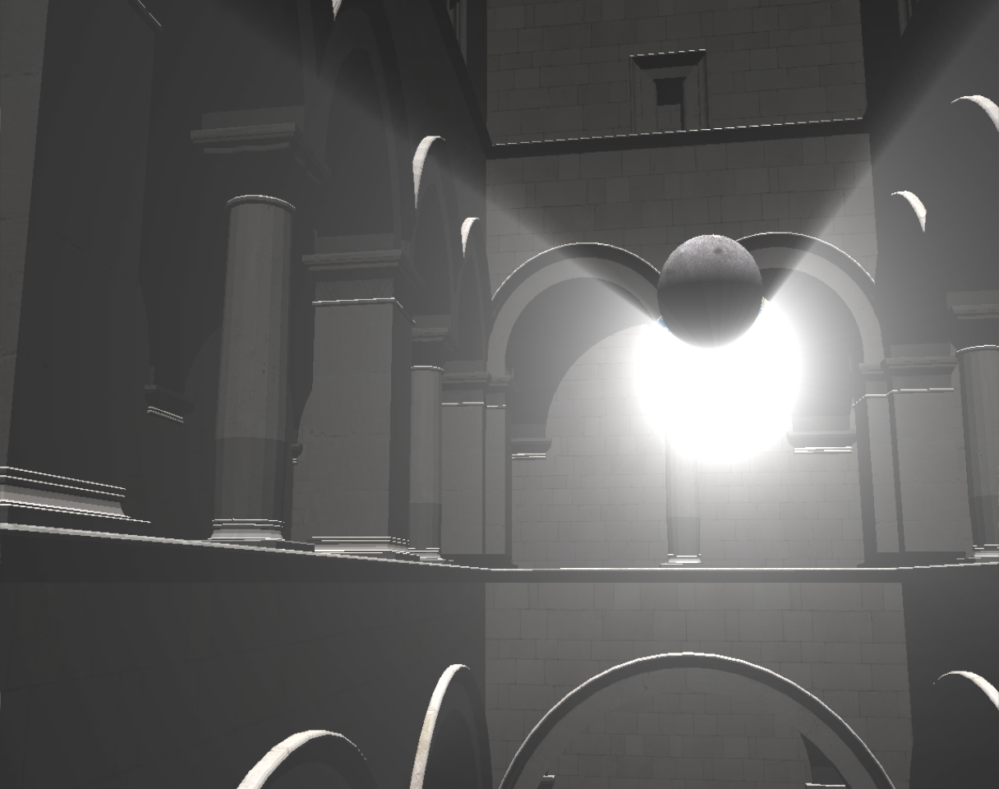

Final Project for CSC 572 - Graduate Graphics Postprocessing
This project uses a postproccessing pipeline in order to simulate the “Godray” effect. “Godrays” are the rays of light eminating from large light sources like the sun. They become most visible when the light is being eclipsed by passing objects such as clouds.
Controls
| Buttons | Effect |
|---|---|
| WASD | camera movement |
| IJKL | earth/lightsource movement |
| Y | enable/disable godrays |
| 1,2 | +/- exposure 0.0001f |
| 3,4 | +/- decay by 0.1f |
| 5,6 | +/- density by 0.1f |
| 7,8 | +/- weight by 0.5f |
Exposure
This variable causes the lighting effect to become more extreme. It creates darker shadows and brighter lights.
Decay
This variable alters the weight of each subsequent sample in the fragment shader loop multiplicatively. Increasing it above 1 creates strange pixelated distortions which are caused from the light source being too heavily sampled.
Density
This determines the closeness of the samples. The lower density is the shorter the rays become.
Weight
This is the overall intensity of the light source. The higher the weight, the more heavily sampled the light source becomes. Unlike decay, this is a constant and does not scale multiplicatively.
Overview of Pipeline

Development Images
Initial Scene
No godray shader has been applied to the scene yet.

Stage 1 - Occlusion of light source
The scene is rendered with the light source as white and everything else as black. The light source is the Earth from the previous scene.

Stage 2 - Scattering the Light Source
The previous stage is then run through my shader godray.frag, which samples towards the light source in order to create the scattering effect.

Stage 3 - Blending Initial Scene with Godrays
The initial scene texture and the stage 2 godray texture are then blended together to create the final godray effect.

